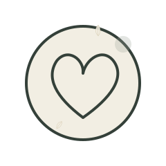

Consultation path
Consultation brings clarity before any treatment decision.

Concept 22 · Precision · Values
The values page turns the Sofiati identity into practical decisions across evaluation, treatment and aftercare.

signature consultant trace
Logo, FS monogram, portrait treatment, botanical detail and custom icons are built as a local Sofiati asset pack for this page.

Valuesconsultant authority
The brand values become practical choices in every protocol.
Consultation brings clarity before any treatment decision.
Every protocol begins with goals, history, suitability and clear expectations.
consultant authorityLaser care is planned around indication, comfort, intervals and aftercare.
Skin care focuses on texture, clarity, sensitivity and barrier respect.
Discuss in consultationConsultation
A short consultation route keeps decisions calm, private and evaluation-led.
CRBM 6277 · Londrina, PR